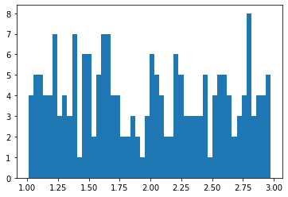
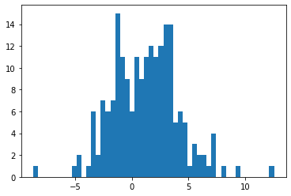

Numpy arrays#
Another very popular library is NumPy, which allows users to work with vectors and matrices and perform mathematical operations with them. It offers comprehensive mathematical functions, random number generations, data distributions and more.
For more information on what is an array and why NumPy is so widely used, read here.
Create a NumPy array#
Let’s now try to see how to create arrays!
import numpy as np
from math import pi
# create a one-dimensional array
array_1d = np.array([pi, pi*2, pi*4])
array_1d
---------------------------------------------------------------------------
ModuleNotFoundError Traceback (most recent call last)
Cell In[1], line 1
----> 1 import numpy as np
2 from math import pi
4 # create a one-dimensional array
ModuleNotFoundError: No module named 'numpy'
Investigate the array
# creck the size of the array
array_1d.size
3
# creck the shape of the array
array_1d.shape
(3,)
# creck the dimension of the array
array_1d.ndim
1
# creck the type of the array
array_1d.dtype
dtype('float64')
# create a one-dimensional array
array_2d = np.array([[pi, pi*2, pi*4], [5.9, 7.0, 3], [pi*1.4, pi*0.2, pi*6.4]])
array_2d
array([[ 3.14159265, 6.28318531, 12.56637061],
[ 5.9 , 7. , 3. ],
[ 4.39822972, 0.62831853, 20.10619298]])
print('Size of the array: ', array_2d.size)
print('Shape of the array: ', array_2d.shape)
print('Dimensionality of the array: ', array_2d.ndim)
print('Type of the array: ', array_2d.dtype)
Size of the array: 9
Shape of the array: (3, 3)
Dimensionality of the array: 2
Type of the array: float64
Create an array according to a distribution#
np.random.seed(42) # fix random seed to get the same set of values every time
uniform = np.random.uniform(1, 3, 200) # arguments are the lower boundary, upper boundary, output shape
uniform
array([1.74908024, 2.90142861, 2.46398788, 2.19731697, 1.31203728,
1.31198904, 1.11616722, 2.73235229, 2.20223002, 2.41614516,
1.04116899, 2.9398197 , 2.66488528, 1.42467822, 1.36364993,
1.36680902, 1.60848449, 2.04951286, 1.86389004, 1.58245828,
2.22370579, 1.27898772, 1.5842893 , 1.73272369, 1.91213997,
2.57035192, 1.39934756, 2.02846888, 2.18482914, 1.09290083,
2.2150897 , 1.34104825, 1.13010319, 2.89777107, 2.93126407,
2.6167947 , 1.60922754, 1.19534423, 2.36846605, 1.88030499,
1.24407647, 1.99035382, 1.06877704, 2.8186408 , 1.51755996,
2.32504457, 1.62342215, 2.04013604, 2.09342056, 1.36970891,
2.93916926, 2.55026565, 2.87899788, 2.7896547 , 2.19579996,
2.84374847, 1.176985 , 1.39196572, 1.09045458, 1.65066066,
1.77735458, 1.54269806, 2.65747502, 1.71350665, 1.56186902,
2.08539217, 1.28184845, 2.60439396, 1.14910129, 2.97377387,
2.54448954, 1.39743136, 1.01104423, 2.63092286, 2.41371469,
2.45801434, 2.54254069, 1.1480893 , 1.71693146, 1.23173812,
2.72620685, 2.24659625, 1.66179605, 1.1271167 , 1.62196464,
1.65036664, 2.45921236, 2.27511494, 2.77442549, 1.94442985,
1.23918849, 2.42648957, 2.5215701 , 2.1225544 , 2.54193436,
1.98759119, 2.04546566, 1.85508204, 1.05083825, 1.21578285,
1.06285837, 2.27282082, 1.62871196, 2.01714138, 2.81513295,
1.49858446, 1.82076585, 2.51110228, 1.45759633, 1.15395982,
1.57950291, 1.32244257, 2.8593953 , 2.61624076, 2.26680751,
2.74292118, 2.60734415, 1.37314012, 2.785118 , 2.07868448,
2.61488031, 2.7921826 , 1.63600695, 1.22010385, 1.45587033,
1.85421558, 2.63602953, 2.72146117, 1.01390426, 2.02149461,
1.83482201, 1.44421562, 1.23973073, 1.67523034, 2.88581941,
1.64640586, 2.03758124, 2.40603792, 1.7272592 , 2.94356417,
2.92489459, 1.50356459, 1.99449701, 1.60175662, 1.56968099,
1.07377389, 2.21912867, 2.00535805, 1.1029575 , 1.55729293,
2.81653177, 1.47912378, 1.28978974, 1.97890552, 2.97130091,
1.48411054, 2.34427109, 2.52323923, 1.47527509, 2.4564327 ,
1.73556627, 2.26461166, 2.26705942, 2.07154937, 1.18057954,
2.67060499, 1.64156013, 1.37303702, 1.08155028, 2.18178589,
2.35512872, 1.03317566, 2.02418612, 1.45299155, 2.29034558,
1.34873286, 2.38187548, 1.77347069, 2.87345998, 1.27504189,
1.6821327 , 1.22694704, 2.84938724, 2.75467871, 1.51588326,
2.31996809, 2.6344444 , 2.11040162, 2.05930116, 1.48370458,
1.18620554, 2.79443152, 2.80083611, 2.26620291, 1.67805958,
1.69841915, 2.45191136, 2.79422052, 2.77417285, 2.55975109])
%matplotlib inline
import matplotlib.pyplot as plt
plt.hist(uniform, bins=50)
plt.show()

# create a normal distribution
normal = np.random.normal(1, 3, 200) # arguments are the lower boundary, upper boundary, output shape
plt.hist(normal, bins=50)
plt.show()

Operations#
uniform = np.random.uniform(0, 1, 20)
normal = np.random.normal(0, 1, 20)
# sum
print(uniform + normal)
[ 0.64831449 0.91894679 0.20887358 -0.28038468 0.03586382 0.96665893
1.50744688 1.07808874 2.2707087 -0.11813726 1.61836552 0.76671077
3.15197548 -0.43342771 -0.55400976 0.26920648 -1.90029989 0.43746752
-0.74697819 1.12027261]
# product
print(uniform * normal)
[ 9.50649629e-02 1.14131777e-02 1.08613362e-02 -3.80804025e-01
2.78279812e-04 2.33392199e-01 8.17041386e-02 1.13978561e-01
2.53055453e-01 -4.98169943e-01 6.50790344e-01 1.06955999e-01
2.10696827e+00 -3.03007247e-01 -2.39918679e-01 -5.20631929e-01
-4.74894245e-01 -5.06419087e-01 -9.22685872e-03 1.45863749e-01]
# difference
print(uniform - normal)
[ 0.20012953 0.89376198 0.01352138 1.26563489 -0.01315653 -0.02933765
-1.39484033 -0.84045291 -2.03565621 1.41655787 -0.12627576 0.40002676
-1.22763038 1.18316886 1.12543393 1.46799177 2.34749156 1.48897756
0.77128714 0.81948504]
# ratio
print(uniform / normal)
[ 1.89306667e+00 7.19762975e+01 1.13843083e+00 -6.37281849e-01
4.63221707e-01 9.41088856e-01 3.87992445e-02 1.23862743e-01
5.45825768e-02 -8.46044652e-01 8.55241580e-01 3.18186093e+00
4.39387734e-01 -4.63777527e-01 -3.40246105e-01 -1.44913211e+00
-1.05276279e-01 -1.83207483e+00 -1.60110022e-02 6.44892884e+00]
# inner product of vectors
print(np.dot(uniform, normal))
0.8772544542002486
# matrix multiplication
matrix_1 = np.array([[3, 8], [2, 9]])
matrix_2 = np.array([[4, 5], [7, 2]])
np.dot(matrix_1, matrix_2)
array([[68, 31],
[71, 28]])
# More on the sum
print(matrix_1)
print('Summing over rows', np.sum(matrix_1, axis=0))
print('Summing over columns', np.sum(matrix_1, axis=1))
[[3 8]
[2 9]]
Summing over rows [ 5 17]
Summing over columns [11 11]
# square root
np.sqrt(matrix_1)
array([[1.73205081, 2.82842712],
[1.41421356, 3. ]])
# exponential
np.exp(matrix_1)
array([[2.00855369e+01, 2.98095799e+03],
[7.38905610e+00, 8.10308393e+03]])
# matrix to the power of 2
matrix_1**2
array([[ 9, 64],
[ 4, 81]])
# flatten array
print(matrix_1)
matrix_1.flatten()
[[3 8]
[2 9]]
array([3, 8, 2, 9])
# indexing a matrix
matrix_1[0, 0]
3
# transposing a matrix
matrix_1.T
array([[3, 2],
[8, 9]])